전자산업기사 (2012-09-15 기출문제)
1과목: 전자회로
1. α0=0.96, fα=1[kHz]인 트랜지스터가 f=2[kHz]에서 동작할 때 전류 증폭도의 크기는 약 얼마인가? (오류 신고가 접수된 문제입니다. 반드시 정답과 해설을 확인하시기 바랍니다.)
- 0.57
- 0.54
- 0.46
- 0.48
(정답률: 60%)
2. 리미터를 필요로 하지 않는 주파수 복조회로는?
- 제곱 검파회로
- 복동조 주파수 변별 회로
- 포스터 실리(forster-seeley) 주파수 변별 회로
- 비검파기(ratio detector)
(정답률: 83%)

3. 궤환 발진기의 발진 조건에 대한 설명 중 옳지 않은 것은? (단, A는 증폭도, β는 궤환량이다.)
- 정궤환을 이용한다.
- A의 위상 변화는 180°이다.
- β의 위상 변화는 180°이다.
- 궤환 이득 Aβ=1이며, 위상 변화는 180°이다.
(정답률: 61%)
4. 부저항(negative resistance) 특성을 가징 다이오드는?
- 쇼트키 다이오드
- 터널 다이오드
- 레이저 다이오드
- 제너 다이오드
(정답률: 75%)
5. 다음 중 FET의 3정수에 해당되지 않는 것은?
- 전압 증폭률
- 드레인 전류
- 드레인 저항
- 상호 콘덕턴스
(정답률: 64%)
6. 진폭변조(DSB) 방식에서 변조도를 80[%]로 하면 피변조파의 전력은 반송파 전력의 몇 배가 되는가?
- 1.1배
- 1.32배
- 1.64배
- 2.16배
(정답률: 76%)
7. 다음 중 정전압회로에서 전류를 제한하는 이유로 가장 적합한 것은?
- 전압변동률을 개선하기 위하여
- 일정한 출력전압을 유지하기 위하여
- 변압기의 소손을 방지하기 위하여
- 정전압회로를 보호하기 위하여
(정답률: 88%)
8. 전력증폭기의 직류 공급 전압은 15[V], 전류는 300[mA]이고 효율은 78.5[%]일 때, 부하에서의 출력 전력은?
- 약 3.53[W]
- 약 4.50[W]
- 약 353[W]
- 약 450[W]
(정답률: 71%)
9. 발진회로에서 수정진동자를 많이 사용하는 이유는?
- Q의 값이 낮기 때문이다.
- 발진주파수 변화가 용이하기 때문이다.
- Q의 값이 중간이기 때문이다.
- Q의 값이 높기 때문이다.
(정답률: 68%)
10. 무궤환시 증폭도를 A, 궤환시 증폭도를 Af, 궤환율을 β라 할 때, A가 대단히 크면 Af는 주로 무엇에 의해서 결정되는가?
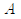
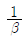
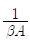
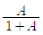
(정답률: 81%)
11. 직렬 전류 궤환증폭기의 궤환신호 성분은?
- 전압
- 전류
- 전압과 전류
- 전압 혹은 전류
(정답률: 79%)
12. 다음 중 부궤환 증폭회로의 특징으로 옳지 않은 것은?
- 이득이 증가한다.
- 잡음이 감소한다.
- 대역폭이 넓어진다.
- 주파수 특성이 좋아진다.
(정답률: 78%)
13. 이미터 플로어 증폭기에 대한 설명으로 적합하지 않은 것은?
- 전류이득은 크다.
- 전압이득은 1에 가깝다.
- 입력임피던스는 매우 높다.
- 출력은 컬렉터 단자에서 얻는다.
(정답률: 74%)
14. 시스템의 출력 펄스에서 오버슈트가 발생하는 이유는?
- 시스템의 하한 차단 주파수가 0인 경우
- 시스템이 전역 대역폭을 가지고 있는 경우
- 시스템이 고주파수 고조파를 과도하게 강조할 경우
- 시스템이 저주파수 고조파를 과도하게 강조할 경우
(정답률: 87%)
15. 잡음이 많은 전송로를 통한 신호 전송에 가장 유리한 펄스 변조 방식은?
- 펄스 폭 변조(PWM)
- 펄스 진폭 변조(PAM)
- 펄스 부호 변조(PCM)
- 펄스 위치 변조(PPM)
(정답률: 78%)
16. 그림과 같은 회로의 설명으로 옳은 것은?
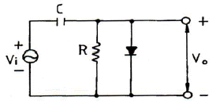
- 클리핑 회로이다.
- 진폭 제한 회로이다.
- 클램프 회로이다.
- 양단 클리핑 회로이다.
(정답률: 76%)
17. C급 증폭기에 관한 설명 중 옳지 않은 것은?
- 유통각을 적게 하면 효율이 높아진다.
- C급 증폭기는 왜율이 높다.
- 유통각 θ=0일 때 효율은 90[%]이다.
- 유통각 θ=π인 경우 B급 동작에 해당된다.
(정답률: 65%)
18. 이상적인 연산 증폭기의 특징으로 적합하지 않은 것은?
- 출력 임피던스가 0이다.
- 입력 오프셋 전압이 0이다.
- 동상신호제거비가 0이다.
- 주파수 대역폭이 무한대이다.
(정답률: 77%)
19. 정류기의 직류 출력전압이 무부하일 때 225[V], 전부하시 출력전압이 200[V]일 때 전압변동률[%]은?
- 10[%]
- 12.5[%]
- 20[%]
- 25[%]
(정답률: 86%)
20. 다음 회로에서 구형파 입력에 대한 출력 파형으로 가장 적합한 것은?
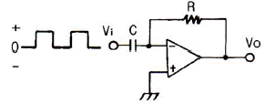
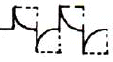
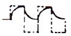
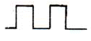
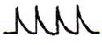
(정답률: 84%)
2과목: 전기자기학 및 회로이론
21. 다음 중 옴의 법칙은 어느 것인가? (단, k는 도전율, ρ는 고유저항, E는 전계의 세기이다.)
- i = ρE
- i = E/k
- i = kE
- i = -kE
(정답률: 62%)
22. 그림과 같이 유전체 경계면에서 ε1 < ε2이었을 때 E1과 E2의 관계식 중 맞는 것은?
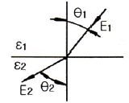
- E1 > E2
- E1cosθ1 = E2cosθ2
- E1 = E2
- E1 < E2
(정답률: 64%)
23. 전류 I[A]가 반지름 a[m]의 원주를 균일하게 흐를 때 원주 내부의 중심에서 r[m] 떨어진 원주 내부 점의 자계의 세기는 몇 [AT/m]인가?
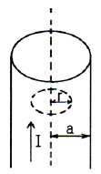
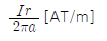
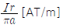
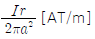
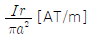
(정답률: 72%)
24. 그림과 같이 반지름 2[m], 구너수 100회인 원형 코일에 전류 1.5[A]가 흐른다면 중심점 O의 자계의 세기는?
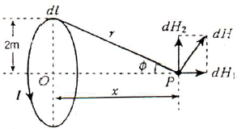
- 30[AT/m]
- 37.5[AT/m]
- 75[AT/m]
- 1⑤[AT/m]
(정답률: 62%)
25. 다음 중 강자성체가 아닌 것은?
- 알루미늄
- 니켈
- 코발트
- 철
(정답률: 78%)
26. 전기력선의 성질에 해당하지 않는 것은?
- 전계가 0이 아닌 곳에서 전기력선은 도체표면에 수직으로 출입한다.
- 전기력선은 정전하에서 시작하여 부전하에서 끝난다.
- 전기력선은 전하가 없는 곳에서는 전기력선의 발생, 소멸이 없고 연속적이다.
- 전기력선은 도체 표면에만 존재한다.
(정답률: 60%)
27. 직선 도선에 전류가 흐를 때 주위에 생기는 자계의 방향은?
- 전류의 방향
- 전류와 반대방향
- 오른 나사의 진행방향
- 오른 나사의 회전방향
(정답률: 76%)
28. 그림과 같은 판의 면적 1/3 S, 두께 d와 판면적 1/3 S, 두께 1/3 d 되는 유전체(εs=3)를 끼웠을 경우의 정전용량은 처음의 몇 배인가?
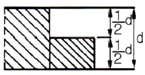
- 1/2
- 5/6
- 11/6
- 13/6
(정답률: 63%)
29. 다음 중 맥스웰의 전자 방정식이 아닌 것은?
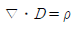
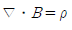
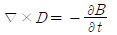
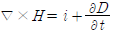
(정답률: 63%)
30. 자기회로의 자기저항이 일정할 때 코일의 권수를 1/2 로 줄이면 이 코일의 자기인덕턴스는?
- 1/2 로 된다.
- 1/4 로 된다.
- 2배로 된다.
- 4배로 된다.
(정답률: 63%)
31. 다음 파형의 라플라스 변환은?
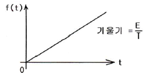
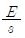
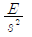
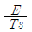
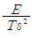
(정답률: 60%)
32. 형광등에 100[V]를 가했을 때, 0.5[A]의 전류가 흐르고 그 소비전력은 25[W]였다면 이 형광등의 역률은?
- 50[%]
- 63[%]
- 75[%]
- 80[%]
(정답률: 68%)
33. 하이브리드 G 파라미터와 임피던스 및 어드미턴스 파라미터와의 관계로서 옳은 것은?
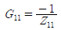
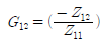
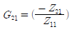
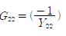
(정답률: 59%)
34. 다음 회로에서 스위치 S를 닫았을 때 흐르는 전류 i (t)는?
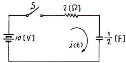
- 5e-t[A]
- 5(1-e-t)[A]
- -5e-t[A]
- 5(1+e-t)[A]
(정답률: 57%)
35. 다음과 같은 회로에서 쌍대회로가 될 수 있는 것은?
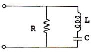
- RLC가 직렬로 연결된 회로
- RC 병렬회로에 L이 직렬 연결된 회로
- RC 병렬회로에 C가 직렬 연결된 회로
- LC 병렬회로에 R이 직렬 연결된 회로
(정답률: 70%)
36. 다음과 같은 회로가 정저항 회로가 되기 위한 L의 값은? (단, R=1[kΩ], C=0.1[μF]이다.)
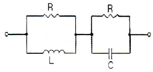
- L = 10[mH]
- L = 50[mH]
- L = 100[mH]
- L = 150[mH]
(정답률: 65%)
37. 다음 ( ) 안에 내용은 어떤 요소의 전달함수인가?
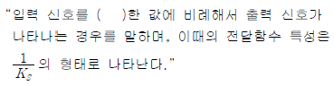
- 비례
- 미분
- 적분
- 1차 지연
(정답률: 70%)
38. 10[μF]의 콘덴서에 100[V], 60[Hz]의 교류 전압을 인가할 때의 전류는 약 몇 [A]인가?
- 0.3768
- 0.7536
- 1.1304
- 1.5072
(정답률: 63%)
39. 그림과 같은 완전 변압기(perfect transformer)에서 성립하는 식은?
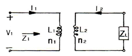
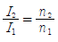
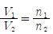
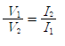
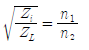
(정답률: 65%)
40. 다음 회로와 같은 이상 변압기의 권선비가 n1 : n2 = 1 : 2일 때 a, b 단자에서 본 임피던스는?
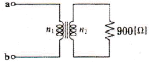
- 100[Ω]
- 225[Ω]
- 450[Ω]
- 900[Ω]
(정답률: 73%)
3과목: 전자계산기일반
41. 제어 유니트(장치)에서 다음에 실행할 마이크로명령어의 주소를 가지고 있는 레지스터는?
- CBR
- CAR
- IR
- PC
(정답률: 63%)
42. 0101000-1101101의 2진수 뺄셈 연산을 2의 보수를 이용하여 계산하면 10진수로 얼마인가?
- -49
- -59
- -69
- -79
(정답률: 71%)
43. 오퍼랜드 형식에 따라 명령어를 구분할 때, 그 분류에 포함되지 않는 것은?
- 메모리 참조 명령
- 레지스터 참조 명령
- 입출력 명령
- 버스 참조 명령
(정답률: 55%)
44. 컴퓨터의 각 구성 요소 간의 데이터 전송에 사용되는 공동의 전송로를 무엇이라 하는가?
- port
- channel
- bus
- interface
(정답률: 78%)
45. 명령(instruction)의 형식에 있어서 연산수(주소의 개수)에 의한 분류시 해당되지 않는 것은?
- 1주소 방식
- 2주소 방식
- 3주소 방식
- 4주소 방식
(정답률: 79%)
46. 8비트에 BCD 코드 2개의 숫자를 표현하는 방법으로 기억장치의 공간 이용도를 높일 수 있어 주로 10진수 연산에 사용되는 것은?
- 부동 소수점 형식
- 팩 10진수 형식
- 언팩 10진수 형식
- 8진 데이터 형식
(정답률: 76%)
47. 순서도를 작성하는 일반적인 규칙이 아닌 것은?
- 약속된 표준 기호를 사용한다.
- 흐름에 따라 오른쪽에서 왼쪽으로 그린다.
- 기호 내부에 처리 내용을 간단, 명료하게 기술한다.
- 한 면에 다 그릴 수 없거나 연속적인 표현이 어려울 때는 연결 기호를 사용한다.
(정답률: 76%)
48. n bit를 2의 보수 방식으로 표현하면 범위는?
- -2n-1-1 ~ 2n-1
- -2n-1 ~ 2n-1+1
- -2n-1-1 ~ 2n-1+1
- -2n-1 ~ 2n-1-1
(정답률: 68%)
49. 다음 중 조합논리 회로로만 나열한 것은?
- Adder, Flip-Flop
- Multiplexer, Encoder
- Decoder, Counter
- Ring counter, Subtracter
(정답률: 79%)
50. 다음 순서도 기호의 명칭은?
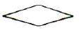
- 처리
- 준비
- 단말기
- 비교, 판단
(정답률: 80%)
51.
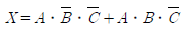
를 간략화 하면?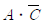
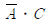
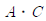
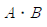
(정답률: 71%)
52. JK 플립플롭에서 J=0, K=1로 입력될 때 플립플롭은?
- 먼저 내용에 대한 complement로 된다.
- 먼저 내용이 그대로 남는다.
- 0으로 변한다.
- 1로 변한다.
(정답률: 78%)
53. 다음 중 C언어에 대한 설명으로 틀린 것은?
- 자체적으로 입출력 기능이 없다.
- 포인터를 이용해 주소를 계산해 낼 수 있다.
- 대소문자 구별이 없다.
- bit 연산을 할 수 있다.
(정답률: 76%)
54. 다음 회로에 맞는 불 대수(Boolean Algebra) 식은?
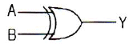
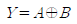
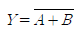
(정답률: 77%)
55. 마이크로프로세서의 구성부분 중 산술연산이나 논리연산을 행하는 곳은?
- 연산회로
- 레지스터
- 제어회로
- 기억장치
(정답률: 80%)
56. 부프로그램에 대한 설명 중 옳지 않은 것은?
- 주프로그램과 부프로그램에서 각각 동일한 변수나 배열명을 다른 의미로 사용해도 좋다.
- 부프로그램에서 다시 부프로그램을 가질 수 있다.
- 부프로그램은 주프로그램의 호출(call)없이 독립적으로 수행할 수 있다.
- 부프로그램은 논리적으로 볼 때 주프로그램과 주종의 관계를 형성하고 있지만 형식상으로는 독립적인 형태를 가지고 있다.
(정답률: 68%)
57. 어떤 인스트럭션이 수행되기 위하여 가장 먼저 행해야하는 마이크로 오퍼레이션은?
- IR → MAR
- PC → MAR
- PC → MBR
- PC+1 → PC
(정답률: 82%)
58. 컴퓨터 디스크에 사용되는 표면이 8개이고 각 표면에는 16개의 트랙과 8개의 섹터(sector)가 있을 때, 섹터 주소지정에 필요한 최소 비트수는?
- 12bit
- 10bit
- 8bit
- 6bit
(정답률: 62%)
59. n개의 입력으로 최대 2n개의 출력을 나타내는 조합논리 회로로서, 출력 중에서 하나는 1이 되고, 나머지 출력은 0이 되는 것은?
- 인코더
- 디코더
- 멀티플렉서
- 디멀티플렉서
(정답률: 60%)
60. 중앙처리장치(CPU)의 속도가 주기억장치의 속도보다 현저히 빠를 때, 중앙처리장치와 주기억장치 사이에 일시적으로 자료나 정보를 저장하는 것은?
- 메인 메모리
- 가상 메모리
- 캐시 메모리
- 보조 메모리
(정답률: 75%)
4과목: 전자계측
61. 다음 중 어떤 전원의 무부하시 전압이 220[V], 정격부하시 전압이 200[V]일 때 전압변동률[%]은?
- 10[%]
- 20[%]
- 30[%]
- 50[%]
(정답률: 84%)
62. 다음 그림에서 V=100[V], A=5[A], W=400[W]일때 부하의 역률은?
- 0.8
- 0.85
- 0.9
- 1.0
(정답률: 65%)
63. 다음 중 고주파 및 파형의 영향을 받지 않는 계기는?
- 가동철편형
- 전류력계형
- 유도형
- 열전대형
(정답률: 73%)
64. 고저항이나 절연저항 측정에 많이 사용되는 메거는 어떤 눈금에 가깝도록 되어 있나?
- 평등눈금
- 불평등눈금
- 대수눈금
- 대각선눈금
(정답률: 71%)
65. 열전 온도계는 어떤 현상을 응용하는 것인가?
- 펠티어 효과
- 압전기 효과
- 베르누이의 원리
- 지벡 효과
(정답률: 76%)
66. 다음 중 표준 계기의 구비 조건으로 옳지 않은 것은?
- 튼튼하고 취급이 편리할 것
- 동(銅)에 대한 열기전력이 클 것
- 응답도가 좋고 절연 및 내구력이 높을 것
- 영구성이 있고 외부 조건 등의 영향이 없을 것
(정답률: 80%)
67. 다음의 휘트스톤 브리지 저항측정 회로에서 저항 X는?
(정답률: 82%)
68. 가동 코일형 전류계에서 지침의 회전각 θ는 다음 중 어느 것에 비례하는가?
- 자속밀도의 자승
- 스프링 정수
- 가동코일의 전류
- 전류의 자승
(정답률: 54%)
69. 어떤 전파를 레헤르선으로 측정하니 인접한 전압이 최대로 되는 점 사이의 거리는 1[m]라 한다. 이 전파의 주파수는 몇 [MHz]인가?
- 100
- 150
- 200
- 250
(정답률: 54%)
70. 직류 전류계의 지시 회로가 그림과 같을 때 A2의 내부저항 값은?
- 4[Ω]
- 3[Ω]
- 2[Ω]
- 1[Ω]
(정답률: 45%)
71. 트랜지스터의 주위 온도가 상승하면 불안정한 동작을 하게 되는데 이에 해당하지 않는 것은?
- 컬렉터 전류가 증가한다.
- 이미터 전류가 감소한다.
- 트랜지스터의 저항이 감소한다.
- 온도가 점점 상승하면 트랜지스터가 파손된다.
(정답률: 55%)
72. 디지털(Digital) 전압계의 원리에 해당하는 것은?
- 비교기
- 미분기
- D-A 변환기
- A-D 변환기
(정답률: 81%)
73. 지시각을 θ라 하면 스프링 제어장치의 토크는?
- θ에 비례한다.
- θ2에 비례한다.
- √θ에 비례한다.
- 1/θ에 비례한다.
(정답률: 50%)
74. 정전용량, 저주파 주파수 측정 등에 사용되는 브리지는?
- 윈 브리지
- 캠벨 브리지
- 셰링 브리지
- 코올라시 브리지
(정답률: 67%)
75. 3상 전력을 측정하는 방법으로 적합하지 않은 것은?
- 1 전력계법
- 2 전력계법
- 3 전력계법
- 교류전력 멀티미터법
(정답률: 36%)
76. 100[V]의 전압을 측정하였을 때 지시치가 102.6[V]이면 이 전압계의 백분율 오차는?
- +2.6[%]
- -2.6[%]
- +2.53[%]
- -2.53[%]
(정답률: 62%)
77. 계량할 수 없는 불규칙적인 원인으로 생기는 오차는 실험을 반복하여 그 결과를 종합분석하고, 통계적으로 계산하여 어느 정도 오차를 시정할 수 있는 것은?
- 계통적 오차
- 개인적인 오차
- 우연 오차
- 기기적인 오차
(정답률: 60%)
78. 다음 중 계측기의 구비 조건이 아닌 것은?
- 응답도가 높을 것
- 절연 및 내구력이 높을 것
- 확도가 높고 오차가 적을 것
- 눈금이 균등하거나 비대수 눈금일 것
(정답률: 70%)
79. 그림과 같은 브리지의 평형 조건은?
(정답률: 65%)
80. 다음 중 고주파 주파수 측정에 사용되지 않는 것은?
- 흡수형 주파수계
- 진동편형 주파수계
- 레헤르선(Lecher wire) 주파수계
- 버터플라이(butterfly)형 주파수계
(정답률: 59%)